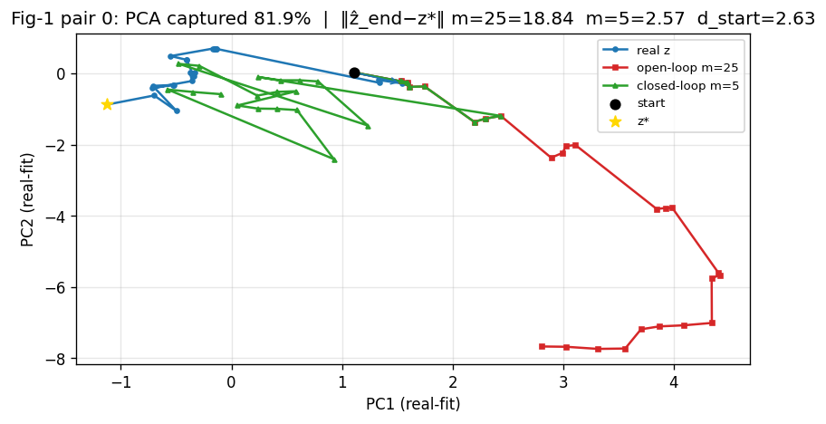
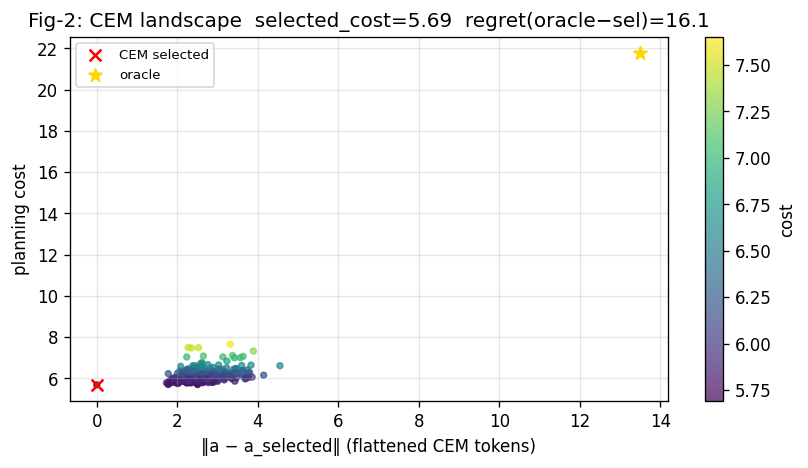
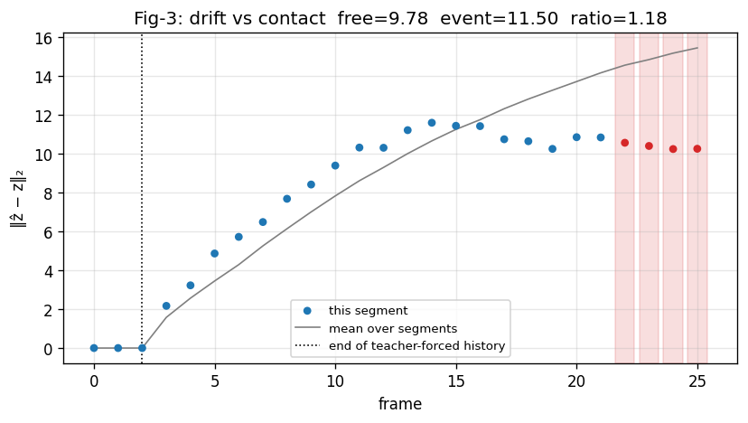
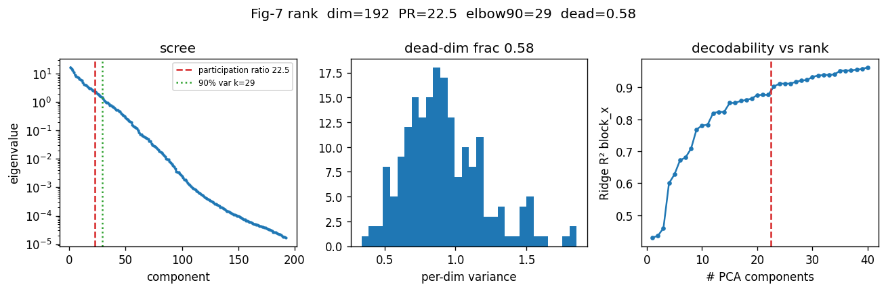
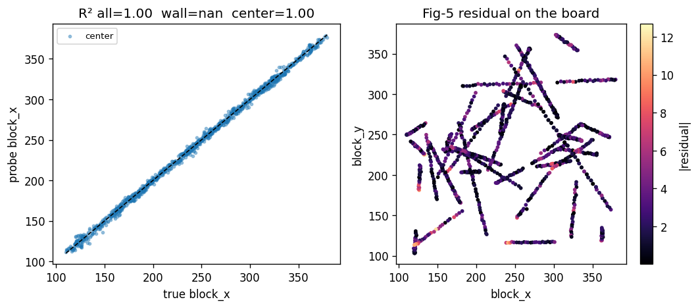
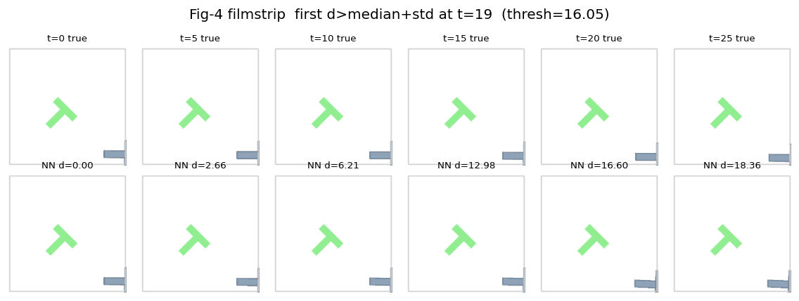
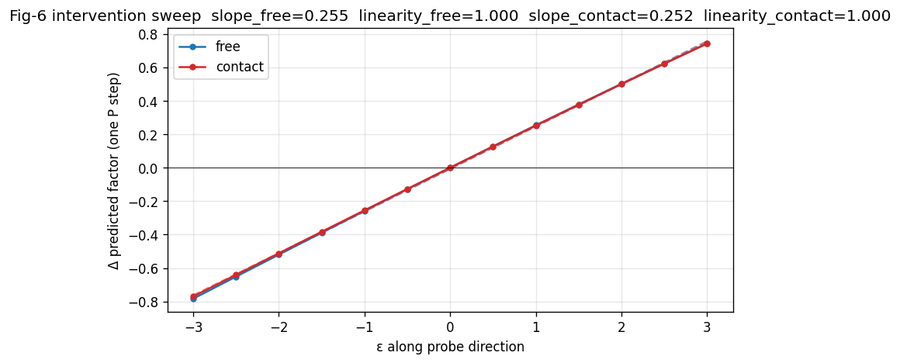

Scalars are the citable result; figures navigate. See report.md for the metric pull.
{
"ca0_fork": "CA0-INFIDELITY",
"ca0": {
"1": {
"m": 1,
"mean_d_end": 1.4256690740585327,
"mean_d_start": 2.6107232570648193,
"frac_toward": 0.84,
"n": 50
},
"3": {
"m": 3,
"mean_d_end": 2.0167295932769775,
"mean_d_start": 2.6107232570648193,
"frac_toward": 0.66,
"n": 50
},
"5": {
"m": 5,
"mean_d_end": 2.351325273513794,
"mean_d_start": 2.6107232570648193,
"frac_toward": 0.62,
"n": 50
},
"12": {
"m": 12,
"mean_d_end": 5.036725044250488,
"mean_d_start": 2.6107232570648193,
"frac_toward": 0.08,
"n": 50
},
"25": {
"m": 25,
"mean_d_end": 8.228082656860352,
"mean_d_start": 2.6107232570648193,
"frac_toward": 0.02,
"n": 50
}
}
}
Motivates: ‖ẑ_end−z*‖ and toward-goal fraction vs m (CA0 curve)
{
"d_end_open": 18.841596603393555,
"d_end_closed": 2.5733795166015625,
"d_start": 2.6254725456237793,
"toward_open": false,
"toward_closed": true,
"fork": "CA0-INFIDELITY",
"pair": 0
}
Motivates: cost(oracle actions) − cost(CEM-selected) (planner regret)
{
"selected_cost": 5.688507556915283,
"oracle_cost": 21.755271911621094,
"regret": 16.06676435470581,
"n_candidates": 300
}
Motivates: free-space vs contact mean-drift scalars
{
"free_mean_drift": 9.77547827533393,
"contact_mean_drift": 11.503300003103307,
"ratio": 1.1767506079092949,
"segment": 0
}
Motivates: elbow index and dead-dim fraction (CA2)
{
"participation_ratio": 22.45205206549647,
"elbow_90": 29,
"dead_dim_fraction": 0.578125,
"z_dim": 192
}
Motivates: conditional R² by region (near-wall vs center)
{
"r2_all": 0.9983716011047363,
"r2_wall": null,
"r2_center": 0.9983716011047363,
"factor": "block_x"
}
Motivates: step index where NN-retrieval distance crosses a threshold
{
"nn_cross_step": 19,
"nn_threshold": 16.051511609653318,
"mean_nn_dist": 9.383233987745443
}
Motivates: slope + linearity (R² of the ε→movement fit) per region
{
"slope_free": 0.25487919833388306,
"linearity_free": 0.9997807571299042,
"slope_contact": 0.252406311067906,
"linearity_contact": 0.9998915437057058
}